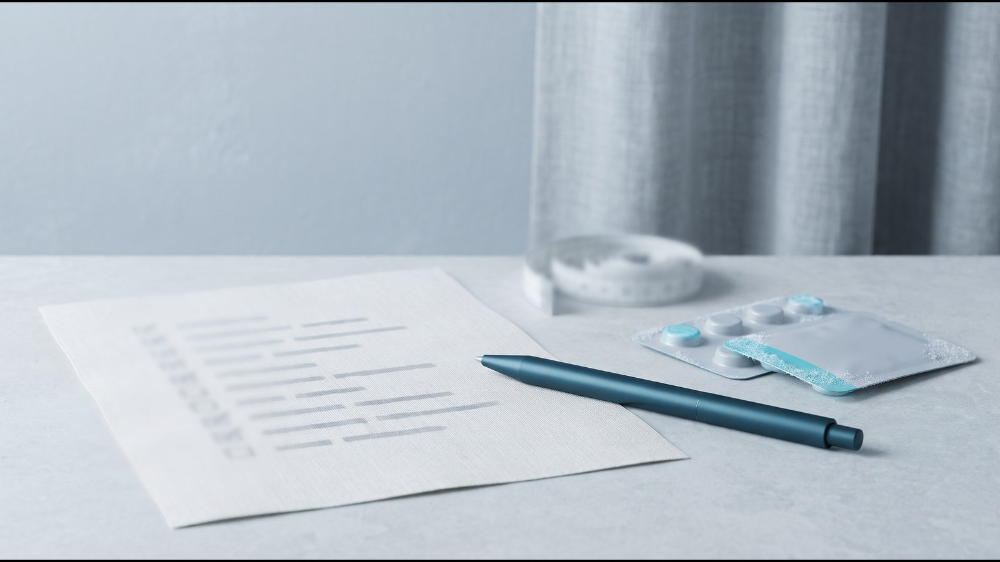

Подготовка к консультации эндокринолога по весу: чек-лист

Подготовка к консультации эндокринолога по весу — это несколько записей, сделанных дома, чтобы на консультации обсуждать лечение, не вспоминая на ходу названия таблеток. Ниже — чек-лист для печати и пояснения к нему.
Что подготовить к консультации: короткий ответ и чек-лист
К консультации по медицинскому снижению веса подготовьте замеры (вес, рост, обхват талии), краткую историю веса, полный список лекарств и добавок и перечень диагнозов, особенно тех, что могут ограничить выбор препарата. Уже имеющиеся анализы возьмите с собой. Вопросы к врачу запишите заранее.
Замеры и история веса
- Взвесьтесь, измерьте рост и обхват талии, рассчитайте ИМТ в калькуляторе ИМТ
- Запишите, с какого возраста начал расти вес и когда были периоды быстрого набора
- Вспомните прошлые попытки похудеть: что делали, сколько сбросили, возвращался ли вес
- Отметьте, что могло повлиять на набор: беременность, новые лекарства, меньше движения, стресс, сон
- Опишите обычный день: еда, перекусы, движение, сон
Лекарства, добавки и здоровье
- Составьте список всех лекарств: название, доза, как часто, с какого времени
- Добавьте витамины, добавки, средства и чаи для похудения
- Отметьте отдельно инсулин, препараты сульфонилмочевины, варфарин, оральные контрацептивы, левотироксин
- Перечислите диагнозы, особенно панкреатит, болезни щитовидной железы, почек, желудка и кишечника, глаз
- Узнайте у родственников, были ли в семье ожирение, диабет, болезни сердца, медуллярный рак щитовидной железы, синдром MEN 2
- Отметьте беременность, её планирование или грудное вскармливание
- Запишите запланированные операции, гастроскопию или колоноскопию под седацией
- Опишите настроение, эпизоды переедания или жёстких ограничений в еде
Документы и вопросы
- Найдите имеющиеся анализы и заключения других врачей, с датами
- Запишите свои вопросы и чего вы ждёте от лечения

История веса: о чём спросит врач
Европейские практические рекомендации EASO для первичного звена (Obesity Facts, 2019) предлагают начинать с анамнеза из 12 пунктов. Среди них история веса от рождения до сегодня, причины набора (беременность, лекарства, снижение активности, расстройства пищевого поведения, психологические проблемы), а также прошлые попытки похудеть и «эффект йо-йо», когда вес то снижается, то возвращается.
Кроме того, в перечне есть образ жизни, кардиометаболические болезни в семье, сон, стресс, настроение, переедание, ночная еда и ваши ожидания.
От ИМТ зависит и то, показаны ли лекарства. По инструкциям EMA Mounjaro® (тирзепатид) и Wegovy® (семаглутид) для контроля веса показаны взрослым с ИМТ от 30 кг/м² или от 27 до 30 кг/м² при наличии хотя бы одного связанного с весом заболевания, например предиабета, диабета 2 типа, гипертензии или апноэ сна. Ozempic® (семаглутид) по украинской инструкции назначают при сахарном диабете 2 типа, снижение веса его показанием не является. Как по ИМТ определяют степень ожирения, описано отдельно.
Лекарства и добавки: зачем полный список
Некоторые лекарства от других болезней влияют на вес. Endocrine Society в рекомендациях 2015 года советует учитывать это при выборе терапии сопутствующих заболеваний и приводит в пример противоэпилептические препараты. Менять их самостоятельно не стоит, это решает назначивший их врач.
Вторая причина составить полный список — взаимодействия. Mounjaro® и Ozempic® замедляют опорожнение желудка и могут менять всасывание таблеток, с инсулином и сульфонилмочевиной растёт риск гипогликемии, а по оральным контрацептивам с тирзепатидом европейская и американская инструкции расходятся. Подробно об этом в статье о взаимодействиях и операциях на GLP-1-терапии.
Добавки тоже вносите в список. FDA предупреждает, что многие средства для похудения (таблетки, «жиросжигатели», чаи), вероятно, содержат опасные скрытые ингредиенты. Так, в 2026 году FDA повторно обнаружило сибутрамин в средстве, о котором предупреждало ещё в 2019 году; сибутрамин снят с рынка в 2010 году по соображениям безопасности, так как может значительно повышать давление и пульс.
Состояния, о которых спросит врач
Единственное противопоказание в украинской инструкции Ozempic® и в инструкции EMA для Mounjaro® — повышенная чувствительность к действующему веществу или компонентам препарата. Остальное в инструкциях — предостережения: препарат применяют с осторожностью, не рекомендуют или усиливают контроль. NICE NG246 (2025) советует выявлять сопутствующие болезни при первой оценке и лечить их сразу, не дожидаясь похудения.
| Состояние | Что пишут инструкции и рекомендации |
|---|---|
| Аллергия на компоненты препарата | Противопоказание: Ozempic® (МЗ Украины), Mounjaro® (EMA) |
| Медуллярный рак щитовидной железы у вас или в семье, синдром MEN 2 | Противопоказание по инструкциям США для Ozempic® и Zepbound® (тирзепатид); в инструкциях EMA и МЗ лишь данные опытов на грызунах |
| Панкреатит в прошлом | С осторожностью; тирзепатид у таких пациентов не изучали |
| Беременность, её планирование, грудное вскармливание | Ozempic® (МЗ): не применяют во время беременности и грудного вскармливания. Mounjaro® (EMA): не рекомендован во время беременности, при грудном вскармливании EMA допускает рассмотреть применение. Отменить минимум за 2 месяца (Ozempic®) или 1 месяц (Mounjaro®) до планируемой беременности |
| Сахарный диабет 1 типа | Семаглутид не применяют, он не заменяет инсулин |
| Диабетическая ретинопатия | Быстрое улучшение контроля глюкозы связывали с временным ухудшением; нужен контроль |
| Тяжёлые болезни желудка и кишечника, гастропарез | Тирзепатид не изучали, с осторожностью; семаглутид EMA не рекомендует при тяжёлом гастропарезе |
| Болезни почек | Обезвоживание из-за тошноты, рвоты или диареи может ухудшить функцию почек; Ozempic® не рекомендован при терминальной стадии |
| Ограничительные расстройства пищевого поведения | Общее противопоказание к GLP-1-терапии по совместным рекомендациям (advisory) ACLM, ASN, OMA и TOS (2025) |
| Операция или эндоскопия под наркозом или глубокой седацией | Инструкции предупреждают о риске аспирации содержимого желудка |
Перед GLP-1-терапией те же рекомендации советуют расспросить о пищеварении, настроении и суицидальных мыслях, мышцах и костях, мочекаменной болезни и почках.
[КОММЕНТАРИЙ ВРАЧА: о каких состояниях чаще всего забывают сказать на первой консультации, 2–3 предложения]
Анализы, которые может назначить врач
Перед началом терапии клиника рекомендует сдать базовые анализы, чтобы оценить общее состояние здоровья и исключить возможные противопоказания. Конкретный перечень при необходимости назначает врач. Ориентир — список EASO (2019), где первые четыре пункта авторы называют главными:
- глюкоза натощак;
- липидограмма: общий холестерин, ЛПВП, ЛПНП, триглицериды;
- печёночные пробы (АСТ, АЛТ, ГГТ), при их повышении также УЗИ печени;
- креатинин (функция почек);
- маркеры воспаления: высокочувствительный С-реактивный белок, ферритин;
- мочевая кислота при подагре;
- ТТГ (функция щитовидной железы);
- по показаниям обследование сердца, апноэ сна, эндокринные исследования (например, на синдром Кушинга).
Гликированного гемоглобина (HbA1c) в списке EASO нет, но NICE определяет по нему повышенный сахар ниже уровня диабета: HbA1c 42–47 ммоль/моль (6,0–6,4 %) или глюкоза натощак 5,5–6,9 ммоль/л. Рекомендации ACLM, ASN, OMA и TOS (2025) перед GLP-1-терапией добавляют осмотр, оценку мышечной силы и предлагают рассмотреть измерение мышечной массы.
Как проходит онлайн-консультация в Avelis
Консультация в Avelis Clinic онлайн и бесплатная. [ФАКТ КЛИНИКИ: формат (видео, телефон, мессенджер) и длительность консультации]
Курс медикаментозного лечения ожирения ведёт врач-эндокринолог: при необходимости назначает анализы, подбирает и корректирует дозу. Во время курса клиника регулярно отслеживает вес и самочувствие, специалист на связи 24/7.
Препарат доставляют по всей Украине в термобоксе с аккумулятором холода, до двери или в отделение Новой почты. В Киеве возможен выезд медицинского специалиста, который сделает инъекцию Mounjaro® дома в удобное время. Препараты оригинальные, серию и срок годности показывают до оплаты. Клиника работает ежедневно с 08:00 до 20:00, телефон +38 (098) 970-97-00.
Частые вопросы
Нужны ли анализы перед началом терапии?
Да, клиника рекомендует сдать базовые анализы, чтобы оценить общее состояние здоровья и исключить возможные противопоказания. Конкретный перечень при необходимости назначает врач; уже имеющиеся результаты возьмите вместе с датами сдачи.
Зачем врачу вопросы о настроении и пищевом поведении?
Рекомендации EASO (2019) включают расстройства пищевого поведения, депрессию, тревогу и стресс в перечень вопросов анамнеза. Рекомендации ACLM, ASN, OMA и TOS (2025) советуют перед GLP-1-терапией расспросить о настроении и суицидальных мыслях, а ограничительное расстройство пищевого поведения называют общим противопоказанием к GLP-1.
Я принимаю лекарства от давления, диабета или щитовидной железы. Что делать?
Принимайте их по привычной схеме, не отменяйте самостоятельно и принесите список на консультацию. Врач оценит взаимодействия, например риск гипогликемии с инсулином или сульфонилмочевиной.
Что делать, если беременность наступила во время лечения?
Сразу сообщите врачу. По украинской инструкции Ozempic® во время беременности не применяют, а тирзепатид по инструкции EMA при наступлении беременности отменяют. Женщинам репродуктивного возраста обе инструкции рекомендуют контрацепцию во время лечения.
Что дальше
Распечатайте чек-лист и заполните его до консультации. Если сначала хотите оценить факторы риска, пройдите тест на похудение: он не назначает препараты, а помогает подготовиться к разговору с врачом.
Источники
- Durrer Schutz D et al. European Practical and Patient-Centred Guidelines for Adult Obesity Management in Primary Care (EASO). Obes Facts, 2019;12:40–66. https://pmc.ncbi.nlm.nih.gov/articles/PMC6465693/
- Mozaffarian D et al. Nutritional priorities to support GLP-1 therapy for obesity: a joint Advisory from ACLM, ASN, OMA and TOS. Am J Clin Nutr, 2025;122(1):344–367. https://pmc.ncbi.nlm.nih.gov/articles/PMC12612741/
- NICE NG246. Overweight and obesity management: identifying and assessing overweight, obesity and central adiposity. NICE, 2025. https://www.nice.org.uk/guidance/ng246/chapter/Identifying-and-assessing-overweight-obesity-and-central-adiposity
- NICE NG246. Overweight and obesity management: medicines and surgery. NICE, 2025. https://www.nice.org.uk/guidance/ng246/chapter/Medicines-and-surgery
- Apovian CM et al. Pharmacological management of obesity: an Endocrine Society clinical practice guideline. J Clin Endocrinol Metab, 2015;100(2):342–362. https://www.endocrine.org/clinical-practice-guidelines/pharmacological-management-of-obesity
- Mounjaro: EPAR Product Information (SmPC). EMA, 2026. https://www.ema.europa.eu/en/documents/product-information/mounjaro-epar-product-information_en.pdf
- Wegovy: EPAR Product Information (SmPC). EMA, 2026. https://www.ema.europa.eu/en/documents/product-information/wegovy-epar-product-information_en.pdf
- Ozempic: EPAR Product Information (SmPC). EMA, 2026. https://www.ema.europa.eu/en/documents/product-information/ozempic-epar-product-information_en.pdf
- Інструкція для медичного застосування лікарського засобу ОЗЕМПІК® (РП UA/19176/01/01, ред. 15.07.2026). МОЗ України, Державний реєстр лікарських засобів, 2026. http://www.drlz.com.ua/ibp/lz_www.nsf/id/4513FF4967F3CA9142258E3C0033EB31/$file/UA191760101_BA8B.pdf
- OZEMPIC (semaglutide) injection: Prescribing Information. FDA, DailyMed, 2026. https://dailymed.nlm.nih.gov/dailymed/drugInfo.cfm?setid=adec4fd2-6858-4c99-91d4-531f5f2a2d79
- ZEPBOUND (tirzepatide): Prescribing Information. FDA, DailyMed, 2026. https://dailymed.nlm.nih.gov/dailymed/drugInfo.cfm?setid=487cd7e7-434c-4925-99fa-aa80b1cc776b
- FDA. Weight Loss Product Notifications. 2026. https://www.fda.gov/drugs/medication-health-fraud-notifications/weight-loss-product-notifications
- FDA. Public Notification: Detoxi Slim contains hidden drug ingredient. 2019, обновлено 2026. https://www.fda.gov/drugs/medication-health-fraud-notifications/public-notification-detoxi-slim-contains-hidden-drug-ingredient
Материал носит информационный характер и не заменяет консультацию врача. Препараты назначает врач после консультации.
Читайте также